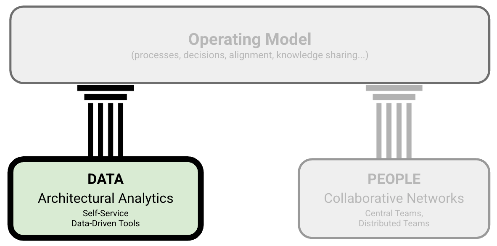
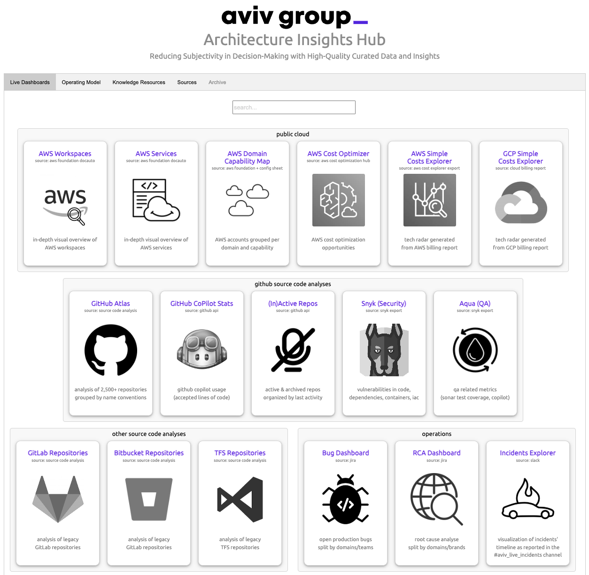

Lightweight Architectural Analytics
IN THIS SECTION, YOU WILL: Understand how to use diverse data sources to support architecture decision-making processes and get concrete tips on creating architecture-centric data tools.
KEY POINTS:
- Lightweight Architectural Analytics serves as a medium to create a complete, up-to-date picture of critical elements of the organization’s technology landscapes.
- Such analytics provides an architecture-centric view of data about a technology landscape based on source code analyses, public cloud billing reports, vibrancy reports, or incident tickets.
- To facilitate the creation of Lightweight Architectural Analytics, I have been creating open-source tools that can help you obtain valuable architectural insights from data sources, such as source code repositories. Check out open-source architecture dashboard examples and Sokrates.
“If we have data, let’s look at data. If all we have are opinions, let’s go with mine.” -— Jim Barksdale
In every organization where I have built an architecture practice, I have strongly—some might say obsessively—emphasized the importance of data. One of the first steps I take is to establish a Lightweight Architectural Analytics capability (Figure 1). This step is crucial for obtaining a comprehensive and up-to-date view of the organization’s technology landscape.
 Figure 1: Grounded Architecture Framework — Lightweight Architectural Analytics
Why I Start With Data:
Manual documentation simply does not scale. It becomes outdated quickly and requires excessive effort to maintain. In contrast, data is scalable, repeatable, and reliable. When executed correctly, data serves as the foundation for effective and consistent architectural decision-making.
The Good News: You Already Have the Data
The good news? Most large organizations already possess ample data. It is just scattered across various tools, teams, and formats.
With the right combination of:
- Automation (to collect and maintain data)
- Curation (to clean and contextualize the data),
…you can unlock valuable architectural insights far more easily than you might expect.
Why “Lightweight”?
I use the term lightweight intentionally. This approach does not involve purchasing expensive software or establishing a massive data warehouse from day one. Instead, it is about:
- Starting small and simple
- Using open-source or low-cost tools
- Focusing on what’s actionable rather than just what’s impressive
You can derive real value using a handful of smart scripts, well-designed dashboards, and a willingness to experiment. The goal is to obtain just enough structure and visibility to facilitate better decisions—without creating a new bureaucracy.
This section will explore how Lightweight Architectural Analytics works in practice:
- What data is useful
- How to collect it
- How to visualize and share it
- And how to use it to drive alignment, reduce waste, and support effective architecture at scale
If architecture involves guiding complex systems through change, then data is the compass that helps keep us oriented in the right direction.
Examples of Lightweight Architectural Analytics Tools
To clarify what I mean by Lightweight Architectural Analytics, I will share some concrete examples from my recent work. These tools are part of a modular dashboard we have developed and extensively used at AVIV Group.

Figure 2: Start page of the architecture analytics dashboard used at AVIV Group.
I typically implement Lightweight Architectural Analytics as a collection of focused data applications aggregated into a simple dashboard. These tools are built on top of existing organizational data and provide accessible insights with minimal setup and maintenance.
Each application draws from one or more of the following data streams, which are often readily available in large organizations:
Figure 3: Overview of core data sources powering the architecture dashboard.
Source Code Repositories: Your source code is a valuable source of architectural signals. By analyzing:
- Commit histories
- Complexity trends
- Contributor patterns
…you can uncover valuable insights into technical debt, team interactions, and system hotspots.
Public Cloud Billing Reports: Cloud billing data reveals:
- Which services are being utilized
- Areas of potential inefficiency
- Cost trends across regions, teams, and services
This information supports more accountable cloud usage and budget-conscious design decisions.
Incident Reports: Incident data highlights:
- Recurring issues
- Weak points in system design
- Dependencies between systems and teams
Analyzing these trends can improve reliability, resilience, and incident response planning.
Business & Product Metrics (e.g., User Activity): By tracking core usage metrics, such as user activity or system vibrancy, architects gain visibility into how systems support real-world business outcomes, providing an essential link between technology and products.
Messaging & Collaboration Tools: Platforms like Slack offer insights into:
- Team collaboration patterns
- Frequent technical discussions
- Emerging pain points or themes
These insights help architects stay connected to the operational realities without the need for constant meetings.
In the following sections, I will guide you through a selection of these data-driven architecture tools, explaining how they were built, the insights they offer, and how they have facilitated architectural decision-making at scale.
Example 1: Source Code and Commit History Analytics
Your source code and commit history are a valuable source of insights—an often-overlooked asset in architectural work. Within that history lie powerful signals about your technology stack, team dynamics, dependencies, and the quality and structure of your systems.
Meet Sokrates: An Architect’s X-Ray Vision
To help you harness this potential without becoming overwhelmed, I developed and actively maintain an open-source tool called Sokrates.
Sokrates is a free, lightweight tool that analyzes codebases across multiple repositories and generates intuitive, visual reports that are:
- Easy to explore, even for non-developers.
- High-level and strategic, ideal for CTOs and architecture reviews.
- Detailed and tactical, useful for in-depth analyses and code critiques.
It allows you to zoom out for a broad overview of your organization’s code and zoom in to inspect specific teams, technologies, or problem areas. Think of it as an architect’s x-ray vision into your source code ecosystem.
Figure 4: Screenshot from a Sokrates report dashboard.
Show Me, Don’t Just Tell Me
Curious what this looks like on a larger scale? Here are a few real examples of Sokrates in action, analyzing large open-source landscapes:
- Apache Software Foundation
- 1,000+ repos · 180M+ lines of code · 22,000+ contributors
- Facebook / Meta
- 800+ repos · 120M+ lines of code · 20,000+ contributors
- Microsoft OSS
- 2,400+ repos · 100M+ lines of code · 18,000+ contributors
- Google OSS
- 1,600+ repos · 200M+ lines of code · 27,000+ contributors
- Linux
- 178 folders · 23M+ lines of code · 17,000+ contributors
- Amazon OSS
- 2,700+ repos · 130M+ lines of code · 13,000+ contributors
These reports illustrate how Sokrates can uncover patterns across thousands of projects—providing valuable insights into code health, ownership, and evolution.
Specialized Analyses for Architecture Insights
In addition to standard commit and repository analysis, I’ve developed several specialized tools that extract architecture-relevant signals from code and tooling:
- CI/CD Insights (via Travis & Jenkins Analyzers): Understand how teams build, test, and deploy.
- Dockerfile Scanner: Create a real-time tech radar of the runtime technologies used across teams.
- GitHub PR Activity Monitor: Measure deployment frequency and identify bottlenecks or silos.
Build Your Own
Sokrates is open-source and ready to use, but even if you choose to create your own tools or pipelines, I encourage you to:
- Experiment with what matters most to your organization.
- Connect code signals to business context.
- Share insights visually to maximize their impact.
Start small, automate early, and let the data guide you to architect smarter solutions.
Example 2: Public Cloud Usage Analytics
One of the key advantages of using public cloud platforms is the built-in visibility and standardization they provide. With uniform automation and monitoring, public cloud environments offer a level of transparency that is challenging to replicate in traditional infrastructures.
Providers like Amazon Web Services (AWS), Google Cloud Platform (GCP), and Microsoft Azure make detailed usage data readily available. This includes insights into:
- Which services are used and by whom
- What resource types and regions are consuming the most
- Team or project-level billing and budget trends
- Access permissions and ownership breakdowns
This data is invaluable for architects looking to understand usage patterns, manage costs, and enhance architectural efficiency across the organization.
To capitalize on this, I developed several open-source custom tools called Cloud Usage Explorer, which visualizes data from standard cloud usage reports. It transforms raw billing data into clear, actionable dashboards that track consumption, trends, and anomalies in near real-time.

Figure 5: An example of a cloud usage explorer.
By leveraging this type of cloud usage data through Lightweight Architectural Analytics, you can:
- Identify underutilized or misconfigured resources
- Encourage cost-aware decision-making among teams
- Promote more efficient architectural design patterns
- Track the evolution of platform usage over time
- Detect siloed or duplicated efforts across teams
Importantly, you can accomplish all of this using data you already have, through simple automation and smart visualization—there’s no need for enterprise-scale tooling right from the start.
Example 3: Business & Finance Data — A Hidden Gem
Finance departments are often the unsung heroes of enterprise data. Consider them the Sherlock Holmes of the business—relentlessly data-driven, meticulous, and always equipped with high-quality, structured information. While they are primarily known for tracking costs, budgets, and forecasts, they often monitor much more than just these “dry” figures.
In my experience, finance teams frequently track vibrancy, usage levels, and system engagement metrics. They do this not out of mere curiosity, but to connect financial performance with system usage. This type of data is a goldmine for architects.
Why It Matters
By linking financial data (such as cloud costs) with usage and vibrancy metrics, you can:
- Uncover underutilized systems that are still incurring high costs.
- Identify platforms that have a high business impact and warrant further investment.
- Highlight inefficiencies in scaling, infrastructure, or usage patterns.
- Strengthen business cases for optimization or redesign.

Figure 6: Combining data from different sources (e.g., cloud billing reports and vibrancy or revenue can lead to new insights (e.g., identifying inefficiencies in the application portfolio).
A Real-World Tip
When you’re deep into architectural planning—whether mapping platforms, defining investment strategies, or discussing redesigns—don’t forget to consult the finance team. They likely possess insights that can enhance your strategy and anchor your architecture in real business value.
While finance may not be present in architecture meetings, they hold some of the most actionable data in the organization. Integrating this data into your architecture discussions will enable you to make decisions that are not only technically sound but also economically and strategically aligned.
Example 4: Leveraging Generative AI
Once you’ve established a solid foundation of curated, up-to-date, and accessible data, you unlock a powerful new layer of value through Generative AI tools—such as ChatGPT, Gemini, or various open-source LLMs. These models serve as intelligent companions for architectural work, transforming your data into interactive, dynamic conversations.
Instead of relying solely on static dashboards or one-time reports, you can now ask natural language questions, such as:
- “Which teams are contributing the most to legacy systems?”
- “Which services have the worst cost-to-vibrancy ratio?”
- “Can you cluster microservices by team ownership and code churn?”
- “What anomalies occurred in our incident patterns over the past quarter?”
Why It Works
This approach is effective only when your underlying data is well-structured and readily available, which is precisely what Lightweight Architectural Analytics is designed to provide. Without that foundation, Generative AI lacks meaningful data to work with.
Practical Use Cases
Here are several ways I’ve utilized Generative AI tools in conjunction with architectural data:
Source Code Insights: Upload Sokrates reports or raw commit logs and prompt the AI with questions about:
- Code complexity hotspots
- Ownership overlaps or silos
- Changes in deployment frequency over time
Cloud Usage & Cost Optimization: Feed in cloud billing reports and ask the AI to:
- Detect underutilized services
- Highlight high-cost/low-impact areas
- Summarize team-specific cloud trends
Incident Pattern Detection: Analyze incident ticket data to:
- Identify frequent root causes
- Recognize recurring impacted services
- Discover trends in team-specific incident ownership
Business Metrics Correlation: Correlate system vibrancy, uptime, or adoption with:
- Team sizes
- Architectural changes
- Operational costs
Communication & Collaboration Trends: Use logs from tools like Slack to:
- Uncover dominant discussion themes
- Track inter-team collaboration patterns
- Identify shifts in focus over time
In each case, Generative AI serves as a first-pass analyst, revealing patterns, anomalies, or new ways of framing problems. This enables architects to move faster, dig deeper, and think broader.
Prompts as Reusable Thinking Tools
Prompts aren’t merely one-time commands; they are a reusable, transparent expression of architectural intent. Over time, prompts can become:
- A form of lightweight documentation for common questions and analyses
- A repeatable template for querying new datasets
- A method to share architectural reasoning across teams
- A teaching tool to assist junior team members facing real-world architectural challenges
Consider prompts as scripts for architectural sensemaking—fast, flexible, and easy to refine as your practice evolves.
For examples, please refer to the Appendix on Generative AI Prompts, where I’ve included ready-to-use prompt templates and sample datasets to help you get started.
Generative AI doesn’t replace architectural judgment; it amplifies it. When paired with good data and clear thinking, it becomes a powerful ally in addressing complexity, accelerating insight, and enhancing your practice.
Requirements for Lightweight Architectural Analytics
Lightweight Architectural Analytics should serve as a central, trusted resource—your organization’s source of truth for architectural insights. It’s not merely a storage bin for random metrics; it’s a curated space of authoritative, relevant, and accessible data that enables informed decisions and confident actions.
Technically, you can start small. I’ve seen organizations build early versions using Google Drive, Confluence, or even documents pinned to a wall. However, I strongly recommend investing in a better user experience and infrastructure. When executed well, Lightweight Architectural Analytics becomes a valuable organizational asset—not a digital junk drawer.
Collecting data isn’t enough. To make your analytics useful, it must meet several key requirements.
Single Point of Truth
People need to know exactly where to go. Your analytics hub should serve as the central reference for all relevant architectural data—no guessing, no scattered files, and no contradictory versions. Ask yourself: If someone starts tomorrow, would they be able to find what they need in one place?
Curated for Quality
Data without trust is simply noise. You must take ownership of curation, ensuring that the data is accurate, meaningful, and transparent. Whenever possible, link back to original data sources so others can verify the facts. Think of yourself more as an editor than just a collector.
Curated for Usability
People need focus, not friction. Filter out irrelevant information. Highlight what matters. Design your tools and dashboards with clarity in mind—investing in user experience (UX) isn’t a luxury; it’s essential for making the data usable. It’s not about having all the data; it’s about having the right data, clearly presented.
Kept Up to Date
Stale data is dangerous. Your system should refresh data automatically or through repeatable, lightweight processes. When people see that the data is fresh, they’ll be more likely to trust and use it.
Accessible to the Whole Organization
Architectural data shouldn’t be restricted to a select few. When you give teams access to insights that were once reserved for “architects” or “leadership,” you empower them to act more quickly, make better decisions, and reduce dependency. Transparency accelerates performance.
Used in Decision-Making
Curated data that sits unused is a wasted effort. Your analytics must be incorporated into actual decision-making processes—in design reviews, strategy sessions, prioritization meetings, and product planning. Good architecture is informed by data.
Built Like a Map
The best metaphor for this type of analytics is a map. A good map provides orientation in a complex landscape. It shows where the treasure is and warns you of where dangers lie. Your architectural data should do the same—helping people understand:
- What exists
- How things are connected
- Where things are healthy or broken
- Who is responsible
- What is at risk
- What should be done next
Like real maps, it should have layers—views that reveal different dimensions of your systems: performance, quality, dependencies, cost, ownership, activity, and more.
By meeting these requirements, Lightweight Architectural Analytics becomes more than just a tool; it becomes a strategic capability—something that makes your entire organization smarter, faster, and more aligned.
Tips for Building Lightweight Architectural Analytics
Every organization has its own quirks when it comes to data, but after establishing architectural practices across several companies, I’ve noticed some common patterns and practical strategies. If you’re starting (or rebooting) a Lightweight Architectural Analytics initiative, here are some key tips to make your journey smoother—and perhaps even enjoyable:
Start With the Source Code
My motto is: “Talk is expensive. Show me the code.”
Why? Because code never lies. It’s the most honest and up-to-date documentation of what’s really happening in your systems. While people may forget details or creatively reinterpret them, your repositories will tell the truth—messy or not.
Modern IT systems store nearly everything in code: infrastructure, pipelines, configurations, and documentation. This makes source code the richest and most reliable source of architectural insight.
I use tools like Sokrates to scan repositories early on. You’d be surprised how often these scans reveal that a “simple legacy service” is, in fact, a spaghetti monster in disguise.
Connect With Finance and Governance
Another motto: “Follow the money!”
Finance and governance teams often collect high-quality, structured, and underutilized data—from cloud billing reports to technology cost breakdowns. This data is already being tracked for compliance and budget forecasting, so why not utilize it for architecture?
You don’t need revenue projections or sensitive figures. Just access to usage and cost data can unlock unexpected insights about system efficiency, platform sprawl, and ROI blind spots.
Maintain a Culture of Transparency
Transparency isn’t just a nice-to-have; it’s a strategic enabler.
A transparent organization shares information freely, trusts its people with data, and reduces red tape. When you eliminate the need for complex access control mechanisms or bureaucratic workflows, your architecture practice can move faster and remain better aligned with reality.
Transparency also fosters trust—people are more likely to use and contribute to your analytics when they see it is open and well-intentioned.
Own the Curation
Raw data doesn’t generate value. Curation does.
You need to thoroughly understand your data sources, filter out the noise, and present the most relevant and trustworthy insights in a clear and consistent manner. This isn’t just a backend task; it’s a UX design problem.
As the curator of your Lightweight Architectural Analytics, think of yourself as:
- An editor, not just an aggregator
- A guide, not just a dashboard builder
- A storyteller, helping teams navigate their complex systems with clarity
Use Simple, Maintainable Infrastructure
Keep it light. Keep it lean.
I publish most of our analytics (like Sokrates reports) as static resources hosted on GitHub Pages. This approach eliminates the need for a backend, databases, and maintenance overhead.
Check out the Architecture Dashboard Examples repository, which includes:
- The dashboard source code (HTML + JSON)
- Lightweight visualizations
- A live demo hosted here
This design is simple—easy to deploy, easy to share, and easy to trust.
Final Thought: Don’t Drown in Data
With these tips, you can avoid the pitfalls of data chaos. Lightweight Architectural Analytics doesn’t have to be expensive or overly complex. It just needs to be:
- Honest
- Relevant
- Usable
- And maintained with care
If nothing else, these practices may save you from your next “How did this get so bad?” meeting—or at least provide you with a few laughs along the way.
Tips for Using Lightweight Architectural Analytics
Lightweight Architectural Analytics can generate vast amounts of data. It’s akin to having an atlas of your entire digital landscape—great for orienting yourself and identifying opportunities. However, maps alone don’t provide direction; it’s the mindset you adopt while interpreting them that truly matters.
Using analytics is like solving a mystery. The data contains answers—but only if you ask the right questions. With the right mindset, you can transform information overload into architecture superpowers.
Here are some detective-style questions to help make sense of architectural data:
Are We All Rowing in the Same Direction?
Utilize code overviews, cloud usage explorers, or tech radars to identify misalignments among teams and systems. Diverging technology stacks, inconsistent platform usage, or duplicated functionality can lead to productive debates and drive real improvements.
Are We Making the Most of Our Technology?
By comparing usage trends across teams, you may uncover hidden virtuosos—those who innovate with limited resources—and bottlenecks, where adoption is low despite high investment. Both reveal valuable insights.
Do Our Systems Need a Little TLC?
Analytics can highlight:
- Oversized systems
- Rampant duplication
- “God files” that dominate commit histories
These are indicators that part of your architecture may be due for a health check—or a rewrite.
Is More Really More?
For example, if the number of Git merges increases proportionally with team size, while delivery speed does not improve—something is amiss. Scaling can lead to better output, but sometimes it just creates a larger digital mosh pit.
Are We Collaborating the Way We Want To?
Analyzing repository and commit data can reveal team dynamics and coupling patterns. You’ll discover who is truly collaborating—and who might be unintentionally stepping on each other’s toes.
Are We Working on What We Want to Work On?
We often claim we want to innovate, but if the data shows we are bogged down in legacy maintenance, it’s a wake-up call. Analytics provides the evidence needed to challenge strategy with facts, rather than just opinions.
The Final Question
The data is available, and the story is waiting to be uncovered. So, what’s your question?
To Probe Further
- Online Appendix Software Tools: Examples and Screenshots screenshots of concrete tools I built as a part of Lightweight Architectural Analytics websites.
- Online Appendix Building Lightweight Architectural Analytics a few practical tips on building lean architecture dashboards and documents using simple, widely available tools.
- Open-source architecture dashboard examples
- Sokrates, an open-source polyglot source code examination tool
Questions to Consider
Using data can significantly improve the efficiency and impact of an architecture practice. Ask yourself the following questions:
- What steps would you take to create an Lightweight Architectural Analytics in your organization?
- Are there untapped data sources within your organization that could inform your architectural decisions?
- How could you automate gathering data for architectural insights in your organization?
- What examples can you provide of the data you’ve used to gain reliable information about technology in your organization?
- How would you examine public cloud billing reports, incident reports, or key business metrics for architectural insights?
- How can you ensure your data is reliable and up-to-date?
- Do you collaborate with finance and governance teams to incorporate financial and vibrancy data into your data analysis?
- Is there a culture of transparency in your organization?
Grounded Architecture Framework: Foundations |